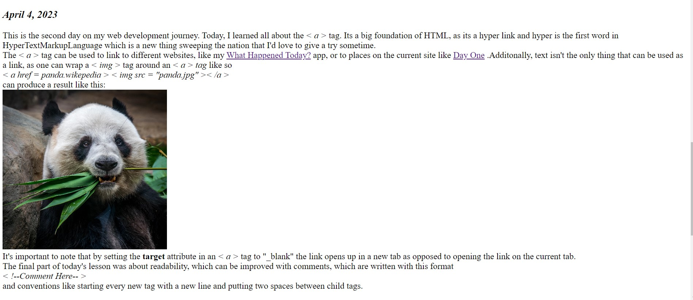
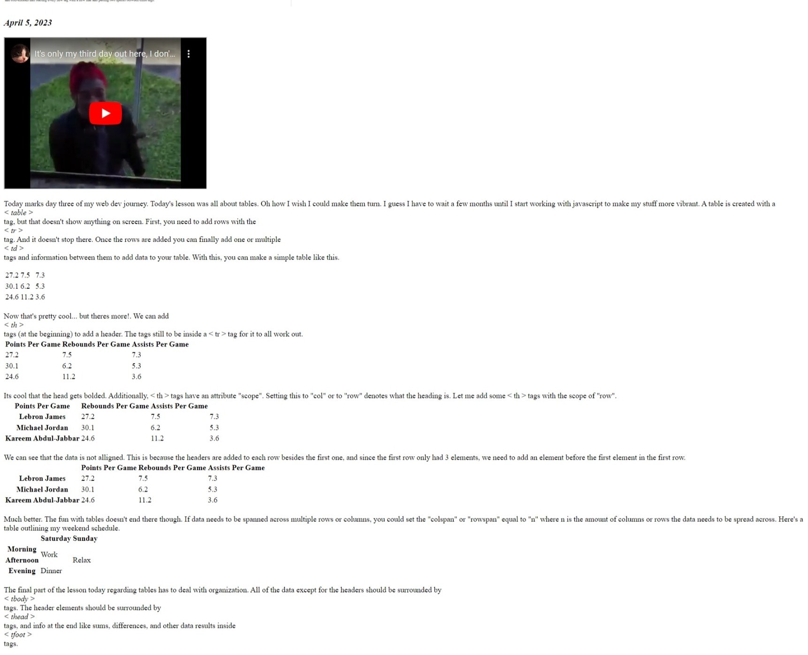
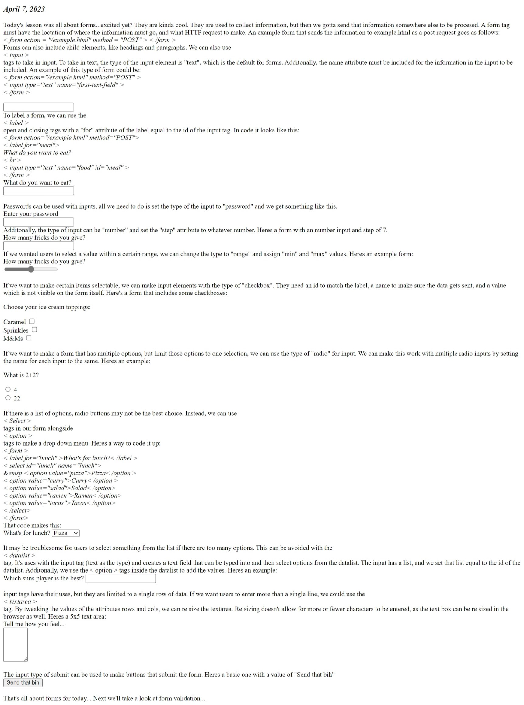
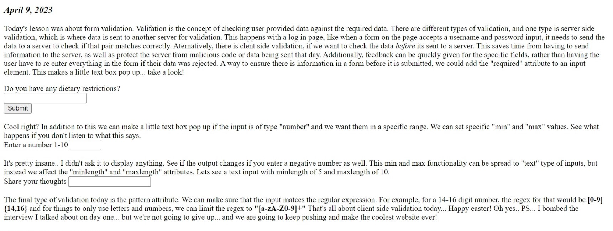
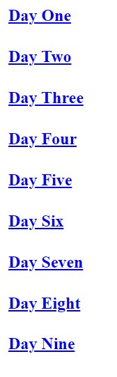

Hello, I am Elijah Hoffman and i am an aspiring web developer. I want to make cool things with code. I have some cool projects under my belt. The biggest project I made so far is either my fantasy fighting game in c++, or my online marketplace/shop in Java. Both of these were school projects. On the side, I made a web app called 'What happened today?' which displays the current time and an interesting fact that happend that day. The problem with these projects is that I can't really credit myself with creating them. The fantasy fighting game is pretty rough around the edges and is more of a press enter simulator than a game. For the java project, I copied code from my classwork and pasted it in the weekly homework. I truly had no idea about the concepts of it all and rushed it to get it done and get a solid grade. Finally, the web app is a modified tutorial on making a clock. The clock is ripped straight from the tutorial, and although I did use an API and added some things to the tutorial and changed some things around, it really is not mine. It wasn't until I started working on another project 'NBA guessing game' in which I found out that I really cannot create anything from the ground up. I feel as though I got stuck in the loop of comparing myself to others and wanting to create cool things I glossed over the fact that I have to make things. I purchased codecademy a while ago, and would rush through the lesson plans to see the progress bar go up, instead of trying to understand the concepts. So, I have humbled myself into restarting my progress on codecademy and am going to document this slow journey to help myself stay motivated and hopefully land a job.
April 3, 2023
This is the first day of something great. I started codecademy over again, and completed the
Introduction to HTML section and the first quiz. Most of this was review, but some stuff blew my mind. For example. I had no idea that things inside the tag are the only things shown on a webpage. It seems trival now, and looking back on my projects I saw that the only things displayed on the page were inside of the tag. I used the tag before but had no idea on what it's use was. It can be used to separate small pieces of text that are on the same line as other content.For example, if you wanted to write about self driving cars you could split up the elements like this.
< p >< span >Self driving cars < /span > are cars that drive by themselves< /p >
Additionally, I learned about styling text within html, and not using css to do all the work there.< em > itallicies text, and < strong > bolds text. Finally the last couple things learned were revolving around the < img > and < video > tags. I found that the alt attribute which is displayed if the img is not supported helps with visually impaired people that might be on the website, as well as SEO, which I recently learned about because I applied for an internship that has a basic knowledge of SEO as a requirement. That interview is in 3 days, so hopefully I do good. Additionally, text inside the opening and closing tags of the < video > attribute is pretty much what the alt attribute is in the video tag.
All in all, I'm excited to re start my coding journey and build a strong foundation to create amazing things and land an amazing job.
What the site looks like today
April 4, 2023
This is the second day on my web development journey. Today, I learned all about the
< a >
tag. Its a big foundation of HTML, as its a hyper link and hyper is the first word in HyperTextMarkupLanguage which is a new thing sweeping the nation that I'd love to give a try sometime.
The
< a >
tag can be used to link to different websites, like my
What Happened Today?
app, or to places on the current site like
Day One
.Additonally, text isn't the only thing that can be used as a link, as one can wrap a
< img >
tag around an
< a > tag
like so
< a href = panda.wikepedia > < img src = "panda.jpg" >< /a >
can produce a result like this:
It's important to note that by setting the
target
attribute in an
< a >
tag to "_blank" the link opens up in a new tab as opposed to opening the link on the current tab.
The final part of today's lesson was about readability, which can be improved with comments, which are written with this format
< !--Comment Here-- >
and conventions like starting every new tag with a new line and putting two spaces between child tags.
What the site looks like today

April 5, 2023
Today marks day three of my web dev journey. Today's lesson was all about tables. Oh how I wish I could make them turn. I guess I have to wait a few months until I start working with javascript to make my stuff more vibrant. A table is created with a
< table >
tag, but that doesn't show anything on screen. First, you need to add rows with the
< tr >
tag. And it doesn't stop there. Once the rows are added you can finally add one or multiple
< td >
tags and information between them to add data to your table. With this, you can make a simple table like this.
27.2
7.5
7.3
30.1
6.2
5.3
24.6
11.2
3.6
Now that's pretty cool... but theres more!. We can add
< th >
tags (at the beginning) to add a header. The tags still to be inside a < tr > tag for it to all work out.
Points Per Game
Rebounds Per Game
Assists Per Game
27.2
7.5
7.3
30.1
6.2
5.3
24.6
11.2
3.6
Its cool that the head gets bolded. Additionally, < th > tags have an attribute "scope". Setting this to "col" or to "row" denotes what the heading is. Let me add some < th > tags with the scope of "row".
Points Per Game
Rebounds Per Game
Assists Per Game
Lebron James
27.2
7.5
7.3
Michael Jordan
30.1
6.2
5.3
Kareem Abdul-Jabbar
24.6
11.2
3.6
We can see that the data is not alligned. This is because the headers are added to each row besides the first one, and since the first row only had 3 elements, we need to add an element before the first element in the first row.
Points Per Game
Rebounds Per Game
Assists Per Game
Lebron James
27.2
7.5
7.3
Michael Jordan
30.1
6.2
5.3
Kareem Abdul-Jabbar
24.6
11.2
3.6
Much better. The fun with tables doesn't end there though. If data needs to be spanned across multiple rows or columns, you could set the "colspan" or "rowspan" equal to "n" where n is the amount of columns or rows the data needs to be spread across. Here's a table outlining my weekend schedule.
Saturday
Sunday
Morning
Work
Relax
Afternoon
Evening
Dinner
The final part of the lesson today regarding tables has to deal with organization. All of the data except for the headers should be surrounded by
< tbody >
tags. The header elements should be surrounded by
< thead >
tags, and info at the end like sums, differences, and other data results inside
< tfoot >
tags.
What the site looks like today

April 7, 2023
Today's lesson was all about forms...excited yet? They are kinda cool. They are used to collect information, but then we gotta send that information somewhere else to be procesed. A form tag must have the loctation of where the information must go, and what HTTP request to make. An example form that sends the information to example.html as a post request goes as follows:
< form action = "/example.html" method = "POST" > < /form >
Forms can also include child elements, like headings and paragraphs. We can also use
< input >
tags to take in input. To take in text, the type of the input element is "text", which is the default for forms. Additonally, the name attribute must be included for the information in the input to be included. An example of this type of form could be:
< form action="/example.html" method="POST" >
< input type="text" name="first-text-field" >
< /form >
To label a form, we can use the < label >
open and closing tags with a "for" attribute of the label equal to the id of the input tag. In code it looks like this:
< form action="/example.html" method="POST">
< label for="meal"> What do you want to eat?
< br >
< input type="text" name="food" id="meal" >
< /form >
Passwords can be used with inputs, all we need to do is set the type of the input to "password" and we get something like this.
If we want to make certain items selectable, we can make input elements with the type of "checkbox". They need an id to match the label, a name to make sure the data gets sent, and a value which is not visible on the form itself. Here's a form that includes some checkboxes:
If we want to make a form that has multiple options, but limit those options to one selection, we can use the type of "radio" for input. We can make this work with multiple radio inputs by setting the name for each input to the same. Heres an example:
If there is a list of options, radio buttons may not be the best choice. Instead, we can use
< Select >
tags in our form alongside
< option >
tags to make a drop down menu. Heres a way to code it up:
< form >
< label for="lunch" >What's for lunch?< /label >
< select id="lunch" name="lunch">
&emsp < option value="pizza">Pizza< /option >
< option value="curry">Curry< /option >
< option value="salad">Salad< /option>
< option value="ramen">Ramen< /option>
< option value="tacos">Tacos< /option>
< /select>
< /form>
That code makes this:
It may be troublesome for users to select something from the list if there are too many options. This can be avoided with the < datalist >
tag. It's uses with the input tag (text as the type) and creates a text field that can be typed into and then select options from the datalist. The input has a list, and we set that list equal to the id of the datalist. Additonally, we use the < option > tags inside the datalist to add the values. Heres an example:
input tags have their uses, but they are limited to a single row of data. If we want users to enter more than a single line, we could use the < textarea >
tag. By tweaking the values of the attributes rows and cols, we can re size the textarea. Re sizing doesn't allow for more or fewer characters to be entered, as the text box can be re sized in the browser as well. Heres a 5x5 text area:
The input type of submit can be used to make buttons that submit the form. Heres a basic one with a value of "Send that bih"
That's all about forms for today... Next we'll take a look at form validation...
What the site looks like today

April 9, 2023
Today's lesson was about form validation. Valifation is the concept of checking user provided data against the required data. There are different types of validation, and one type is server side validation, which is where data is sent to another server for validation. This happens with a log in page, like when a form on the page accepts a username and password input, it needs to send the data to a server to check if that pair matches correctly. Aternatively, there is clent side validation, if we want to check the data before its sent to a server. This saves time from having to send information to the server, as well as protect the server from malicious code or data being sent that day. Additionally, feedback can be quickly given for the specific fields, rather than having the user have to re enter everything in the form if their data was rejected.
A way to ensure there is information in a form before it is submitted, we could add the "required" attribute to an input element. This makes a little text box pop up... take a look!
Cool right? In addition to this we can make a little text box pop up if the input is of type "number" and we want them in a specific range. We can set specific "min" and "max" values. See what happens if you don't listen to what this says.
It's pretty insane.. I didn't ask it to display anything. See if the output changes if you enter a negative number as well.
This min and max functionality can be spread to "text" type of inputs, but instead we affect the "minlength" and "maxlength" attributes. Lets see a text input with minlength of 5 and maxlength of 10.
The final type of validation today is the pattern attribute. We can make sure that the input matces the regular expression. For example, for a 14-16 digit number, the regex for that would be [0-9]{14,16} and for things to only use letters and numbers, we can limit the regex to "[a-zA-Z0-9]+"
That's all about client side validation today... Happy easter! Oh yes.. PS... I bombed the interview I talked about on day one... but we're not going to give up... and we are going to keep pushing and make the coolest website ever!
What the site looks like today

April 10, 2023
Today's lesson was the final part of the forms module, where we built a mad-libs inspired website. I don't want to copy the code over from codecademy (they provided the js and css) so here's my attempt at recreating it...
It doesn't look as good as it did in codeacademy... however... this may change soon as there is only one more lesson in html and I will soon dive head first into css...
The first part of the semantic html lesson is regarding the
< header >
and
< nav >
tags. Header tags are there to denote the heading, and nav tags are there to denote navigational links. It will make the code easier to read an decomposit as an outsider looking in. Instead of a bunch of div tags, we can organize a little better. There are more tags, like
< main >
and
< footer >
tags, which are there to house the most important part of the website, and things like Contact iformation, Copyright information, Terms of use, Site Map, and Reference to top of page links, respectively. Two more tags are
< article >
and
< section >
Article tags defines content that would make sense on its own. They can hold content such as articles, blogs, comments, magazines, etc. An article tag would help someone using a screen reader understand where the article content (that might contain a combination of text, images, audio, etc.) begins and ends. A section tag defines a part of the site that would fall under the same theme. This could be like chapters or headings. If something doesn't fit with either article or section tags, maybe the tag that it should use is
< aside >
aside tags are used for Bibliographies, Endnotes, Comments, Pull quotes, Editorial sidebars, and additional information. Additionally, we can encapsulate media with
< figure >
tags and use
< figcaption >
to caption the media. Another form of media we can use is audio. To do this, we can put a
< source >
tag inside opening and closing
< audio >
tags like this..
< audio>
< source src="iAmAnAudioFile.mp3" type="audio/mp3">
< /audio>
Adding attriubutes like autoplay or controls can make fun stuff happen too.
This lesson also re talked about video tags, and added that if you use the attribute "loop" which will replay the video repeatedly.
April 11, 2023
Today is a great step in my web development journey, as I am stepping into a new language. Cascading style sheets is what gives color and finnese to every website. I'm resetting my progress and going ham. I'm glad I won't have to look at a blank white webpage with basic text..
First, to connect the css to html, we need to add a link to the file in the html. This is typically done by including something like this in the head:
Additonally, you could write css inline with html by chaning the style attribute. lets see Something different. That was accomplished by setting the style attribute of a span element to "color: red". Additonally, in the head, you could add style to a website by adding a style tag, and writing css in quotation marks.
After this the lessons were all about selecting different things in css. You can use the name of the tag to select all of the element ie: p, or h1, * to select all elements, .class to select the members of a class, #id to select an id. Also, you can assign multiple classes to html tags by putting a space inbeteen them. For example, a tag with the class of "green dragon" will be apart of the green class as well as the dragon class. You could also target attributes with [attribute]. We could also get funky and target specific things. Take an image with a src of "abcdefgo/cold.jpg". We can select that image by doing img[src*='winter'].
April 12, 2023
Continuing on the basics of css, I learned about pseudo-classes. A pseudo-class can be attached to any selector with a colon. Examples of pseudo-classes are:
:hover:visited
Additionally, I learned about specificity, which pretty much states that the most specific element in the css will override the less specific attributes. IE: ID->CLASS->TYPE
After this, I learned about chaining, which is when an element requires to have two or more css selectors at the same time. Css for special class for h1 elements can be selected by doing something like:
h1.special {
}
Additionally, you can select elements that are nested within another, called descendants. For example, a list like this < ul class='main-list'>
< li> ... < /li>
< li> ... < /li>
< li> ... < /li>
< /ul>
The < li > elements are nested inside the < ul > element. So to select them, we can do something like this
.main-list li {
}
Finally, we can select multiple elements by separating them with a comma in css. This mitgates repeated code.
P.S.. I added a Nav bar today at the top of the screen to be able to jump to different days. I have high hopes with it.. but for now it looks like garbo in my opinion... I'm hoping to use css to make it somewhat tolerable...

April 13,2023
Today I learned about visual rules in css. First speaking about font family. The font specified must be installed on the users computer or downloaded with the site. Web safe fonts are supported by most browsers and operating systems... Or you could use something like google fonts to use a font remotely. Fonts can be changed in size using the "font-size" and setting it to npx where n is the number of pixels. This is 30px pretty big right? Alternatively, we can set the font size to nvw, where n is the number of "viewport unit", meaning the font will get larger or smaller depending on the browser window. This is 2.3vw and notice how in a full screen window,they look similar sizes. re size the window and you'll see the true power of vw. Another way to style text with css is the "font-weight" property. You could set it to lighter,bold,
or bolder
or to an integer, where 400 is equal to normal, and 700 is equal to bold. To allign text to the parent element that holds it, we can set use the text-align property. Examples of the text align are:
Right
Left
Center
Setting the color makes the text color color: seagreen, or if we want to add a little more color we could change the
background-color: seagreen
Notice how the whole element is green, not just where the text is. We will get more into how to fix this later. Opacity is another way of changing text, and it's value can range from 0 or fully invisible, to 1, fully opaque. With values like .2.5 and .7 inbetween. To make the background stand out, you could use change the background image property... lets see if you can guess this image.
Hint: its white
If you guessed the panda picture from day 2.. you would be absolutely correct.
The final part of the module spoke about !important tags, which can be placed after attributes in an html file to override any selector, no matter how specific it is. The next module talks about the box model in css.
The box model pretty much says that all elements on the webpage are living inside of a box. This is why when we set the background color to seagreen the entire screen became seagreen. This sliver of the screen was the box of that element. The content has a width and height, and this is surrounded by the padding (the amount of space between the content and the border), then the border (thickness and style of the border surrounding the content area and padding), then the margin (The amount of space between the border and the outside edge of the element). The height and width can be set to a px value or a vw value as well.
April 14, 2023
We can see the effect of padding by taking two 50x50 elements, where one has a padding of 50px. The background color is set to red for both.
50x50
50x50 with 50px padding
50x50 with 50 px padding and 20 px margin
Adding the padding, we see that the element has some space inbetween. We also see that since the element is 50x50, the text is all messed up. When it comes to borders, they can be set to a specific width with a pixel number or keyword like this:
thin
medium
thick
Additionally, they can be set to 10 different types including:
none
hidden
dotted
dashed
solid
double
groove
ridge
inset
outset
The final property of the border is the color. If the width, style, or color are not set, then the browser displays the default value for that property: medium none color (where color is the current color of the element). If we don't like the current square shape and sharp edges of the border, we can change the border radius property to a number of pixels. This number would be the same curvature of a circle with a radius of that number. So to make a circle, you could change the border radius to 50% (instead of half the size which I find weird). Take these two circles of 100px x 100px. One has a radius of 50%, the other has 50px.
50%
50px
Padding can be changed in many ways, including changing the padding as a whole, or by changing pieces like padding-top or padding-right. Or... we could not do this at all and do shorthand by providing numerous values. Four values would go top, right, bottom, left. Three values would go top, left&right, bottom. And two values would be top&bottom, left&right. The margin means elements cannot come within x amount of pixels of that element's border. Additonally, margin can be used to center elements. Setting the margin to 0 auto sets the top and bottom margins to 0 pixels, and instructs the browser to adjust the left and right margins until the element is centered within its containing element. Additionally, a width mist be set, because the browser would automatically use the width of the whole screen, and this can change due to display and/or browser window size. Another important thing to note is that vertical margins collapse, while horizontal margins do not. These three elements have margins of 30 px.
Meaning that the effective distance for the left and right margins will be both the margins added together, and the top ando bottom margins just use the larger of the two values.
The size of windows change all the time, so the min/max-width and min/max height can make sure the changing window size does not break the box.
If we do break the box, ie have dimensions that go outside of its parent element, we can change the overflow property.
IF I PUT A LOT OF TEXT LIKE THIS IN A SMALL AREA I CAN SET IT TO SCROLL
Other values include hidden:
IF I PUT A LOT OF TEXT LIKE THIS IN A SMALL AREA I CAN SET IT TO SCROLL
and visible
IF I PUT A LOT OF TEXT LIKE THIS IN A SMALL AREA I CAN SET IT TO SCROLL
( . . This is the default value)
Its good practice to set the default padding and margin to zero at the top of the css page... using *.
Finally, visibility can be set to hidden to hide an element while reserving space for it. Additionally setting the visiblity to visible will display the element, and collapse collapses an element.
IF I PUT A LOT OF TEXT LIKE THIS IN A SMALL AREA I CAN SET IT TO SCROLL
April 15, 2023
Work had me pull a 9am to 11pm... So i only did some light review with codeacademy go...
But i'm still tryna keep that github commit streak alive so... enjoy this cool panda...
April 16, 2023
Today I didn't do anything new on codeacademy, instead I made a quiz with NBA trivia because the playoffs just started. It stinks that the suns lost game one of the first round, but theres still 6 more games to go.
Play the quiz here
It was fun to work on a project without looking anything up....except for the javascript. Overall I definitely feel more fufilled creating something from scratch rather than using a tutorial. I've got two more weeks of school left, so its getting down to the wire... I'm excited to have more time to work on my web dev stuff over summer, but I have to lock in before then and get my schoolwork wrapped up.
April 21, 2023
It has been a while... I have been focusing on my classwork because finals are coming up. I'm excited to work on more web dev over the summer, especially because the internship I interviewed for hasn't responded yet... Also I wasn't planning on continuing the journey until my finals were wrapped up... but I got an email thinking I got an internship but it was actually just a rejection thing...SO NOW I'M READY TO FRICK THINGS UP!!!!!!!!! Picking up where I left off, I saw that the box model changes size with padding and border. If something has a width of 200px and a padding of 30 px, it's actually 260px wide...
This can be bad as projects expand. Luckily, we can change the box-sizing attribute to keep the size constant. Both elements below have a width and height of 100px, a padding of 20 px, and a border of 3px.
Testing
Testing
We can see that the same width and height doesn't mean that they will be the same size...
I have been slacking with the commits because of my finals as it is now 4/25... i have been making excuses for commits because I havent had my computer... but I just downloaded an app on my phone that should do the trick..
The topic today was display and positioning... First, there is a
float property which determines how far left or right an element is positioned in its container. For this to work, the width of the containter must be specified. Common values of the float property include:
right
left
or
Next, the display property determines the type of render for the element. The most common types are block, inline, and inline-block. Block elements take up the full width of the container, with line breaks above and below. Their height and width can be manually adjusted. Inline elements take up as little space as possible and cannot have their height or width manually adjusted. They flow horizontally. For the best of both worlds, inline-block elements can appear next to eachother horizontally and have their width and heights manually adjusted.
The clear property determines how an element should behave when it bumps into another one. It determines which sides floating elements are are allowed to float. By setting the clear to left, this means no elements inside the same container can float to the left of it. This means it will be sent to a new line.Other values of clear include right, none, and both.
The z-index property determines which element will be on top of one another. The more positive the z integer, the more ahead of the others it will be.
The position of elements is important... The default value is static, but there are also values of relative, absolute, fixed, and sticky.
Relative postitoning displays things relative to its static position on the page. This can be combined with top, bottom, left, or right to move the elements away from the specified way. For example, top: 50px combined with an element with the postion of relative will move it 50 px down, or 50 px from it if it had the positon of static. A position that is similar to relative is absolute.
If an elements position is absolute, all other elements will ignore the element and act like its not present. It will be positioned relative to its closest positioned parent element, while the offset properties (top, bottom, left, right) are used to determine the final position from there.
Fixed position will keep the element in the same place, even as the user scrolls... this is commonly used for nav bars...
sticky elements will stay in the same place until it gets to its specified location.
THIS IS STUCK WHAT THE FREAK
We can see that the banner was fixed on screen until it found its location right above. This element has the postition of sticky and the bottom value of 0.
Thats all for today...
Now I'm going surfing for the first time so that will probably be fun... Sophomore year is over and I am 0/37 when applying for internships, and 0/2 in interviews... surfs UP!!!!!!!!
May 22, 2023
Wow... it's been more than a month since I committed anything... A lot has happened... Surfing was really fun! I met up with some friends from school... My girlfriend lives all alone now because of her mom and sister moving all out.. So it was my time to move in!!! I got all A's last semester!!! I have been lazy when it comes to programming as I was only doing the codeacademy GO and just re learing everything I learned. 11 days ago i completed day 14, with a temperature converter to boot... However I did not commit the changes and I got frustrated and broke my computer... That demoralized me.. I've been working overtime though so I can pay for the repairs. Then, I head to my girlfriends house and try to open her laptop and her screen is broken as well... It's unfortunate... I dropped my computer at a repair shop and there still was no update, but since my girlfriend's family moved out of her appartment I decided to just bring my desktop over here since I spend a lot of time here anyway... The other thing I've been doin is playing Zelda, It's so gas... Anyway.. my summer class starts in a few days so I need to take advantage of this extra time I have and get serious..
I took my first codeacademy exam and got a hunnid!!! One step closer to the certification.. Now I started improved styling with css... and making buttons!!! One thing I learned is that if you want the cursor to be different when it hovers over an element you can change the element itself, instead of its :hover version like so HOVER OVER ME
also, I learned that < a > tags can have a title and this will be displayed when hovering..
By default, buttons don't look very cool...
lets change this!
first, we can change the display to flex and change the font and color and text-transform it to uppercase
now, we can change the cursor to pointer, give a 1px solid border, update the border-radius, and give a box-shadow. The box shadow can take in two values, the first being the offset-x, and second being offset-y. Let's only change the offset-y
Looks kinda cool.. but we can make it change by affecting the :active state to look like its being depressed downwards. The margin all around is 20px.
We can change the margin top to 24 px and the bottom to 16 px, and set the box shadow to 0 0.
Another way buttons can be made is with flat styling, with a background color that changes on hover and a text color that changes when active.
that's all for today.. The only thing to leave off with is that the four rules of links should follow this order when it comes to states:
:link
:visited
:hover
:active
cheers!!!
May 23, 2023
Today started off with an article explaining some buzzwords on web development.
Clickability - pretty much the web is the way it is because of the power of the click.. Affordances - Objects afford the ability of users to interact with them in various ways. For example, a bench is made to afford the user to sit on it. However, if it's not bolted in, then the bench also affords the ability to throw it, turn it over, or other things. Even though its not it's designed purpose, the object still affords those actions. Pretty much, it's the potentials for interaction.
Signifiers - These are aspects of an object that helps a user see the indicated potential and intended affordances of an object. A cup can be dranken out of, but a cup with a handle signifies that this should be dranken. UX Patterns (User experience) - these establish reusable solutions to common problems. Handles on the cup are used elsewhere, and can help indicate because of previous experience.
and apparently we ended with it too lol
May 24, 2023
This lesson started with the idea of primary vs secondary navigation. Primary navigation contains the most important links and buttons that should be displayed on every page of the site, where secondary navigation consists of a clickable list of pages that led to the current page. It's like a file directory... Codeacademy provides the example of a shop site with
Shopping -> Fashion -> Shoes -> Flats -> Brown ->
its also called breadcrumb navigation because of hansel and gretel and the fun story.
We are doing some crazy stuff over here when it comes to css. Lets say there is a list with the class of breadcrumb. We could select
.breadcrumb li+li::before
and set the content property to ">" to place that inbetween all elements in the list.
the "+" is the adjacent sibling selector, so it will only select to li if they are immediately next to each other with the same parent. The ::before part creates a pseudo-element and is paired with the content property to add content right before the selected element.
The three major types of breadcrumbs are location, attribute, and path. Location is what we did for the first example, as everything to the right was located inside it to the left. The shoe's section is contained within the fashion section, which is contained within the shopping section.
Attribute based breadcrumbs are the next on the list. 'Flat' and 'Brown' fit into this list as there is no specific order... Not all brown shoes are flat and not all flat shoes are Brown
The final way bread crumbs are used is with a path like
Home > about > register
Pretty much after this it says to not use breadcrumbs as the primary way to navigate a site because path based breadcrumbs are unique to the users journey... and if the breadcrumbs are already available in the primary navigation, then there is little reason to include them at all.
May 26, 2023
Yesterday and today I worked on a project for codeacademy, where I made a website style guide. I added the color part and got it pretty good. I still want to tweak it and make it better and finish the project, but I have to go to work now.. Here it is
May 27, 2023
Goin to work, worked on the website style guide a lil bit... I'm having trouble with selecting classes, but I got the first part (colors) pretty good... still working on the font part Here it is
May 29, 2023
Happy memorial day to everyone!!! It's been a pleasure... Still working on the guide and can't seem to get the bold... Here it is
May 30, 2023
I started today by making the bold class work in my code... Turns out I had the rule font-weight:bold and font-weight:normal being applied... so that was an easy fix
The last part is to add some text any style it. I added a heading thing.. but I'm done with this project.. I liked the color part the most and my girlfriend even bought me an outfit that matches some of the color styles in the website!!!
Next, on codeacademy I continued learning about css. First I learned about wireframes, which are like blueprints. Wireframes emphasize usability and structure and are pretty much a basic layout.
After this I learned how to translate a website idea to the actual website. Tips include
Think grid
Work with common HTML tags to define the sections
Focus on visual hierarchy and continuity
Think blueprint
work like an architect
Think visual hierarchy
Work with grid and organize it
Middle section is focal point
Think visual continuity
Use the same nav/footer
Color, type, and similar sections
Then I learned about colors... they say that using hsla is the best way for designer because it can be tweaked easily.. Warm colors are between 0 and 60, and cool colors are 140 to 280.. I then learned about color schemes. Monochromatic looks nice and its just using different brightnesses of the same color to make it both contrast and compliment. The next one was complementary colors which can be seen as clashing if they are in a big area together, but can be used in small areas to make it pop. Next, there is analogous color schemes which use three or more adjacent colors to themselves on the color wheel. there is low contrast because they are all similar, so it will be pleasing to the eyes. Then, theres triadic color schemes which use 3 colors that are equidistant from eachother on the color wheel. there are also some emotions and stuff they provide
Red: Passionate, energetic, angry
Orange: Optimistic, playful, fun
Yellow: Welcoming, intellectual, impatient
Green: Prosperous, balanced, growing
Blue: Peaceful, loyal, cold
Purple: Imaginative, royal, spiritual
Gray: Unemotional, compromising
White: Innocent, pure
Black: Luxurious, powerful
May 31, 2023
Wow what a doozy.. the health inspector came back today after we failed the first time and now passed with an 100%!!!
I began by learning about the different header styles, h1s are used for titles and should only have one per page, h2s are used for headings are should identify major sections the user should be drawn to, and h3s are used for subheadings, or for smaller focal points, such as articles.
I read about line height and readability.. Its all about finding a balance between cramped and lonely letters.. and making sure that text is readable. A good rule to follow is to have colums that contain 50-75 characters per line to not be constantly interuppted by line breaks, and not also read too long. Additionally, the primacy and recency effects work on a website meaning that the first and last parts are usually more remembered than the middle. Images also get the user to put their eyes on it. I also learned about F-shaped skimming so to not clutter the website...
It's the next day but I'm just adding to this day... my summer class started so I finished the homework for it and I thought why not just try and code some more today... It's not like I have to be up at 5 tomorrow morning.... oh wait... I worked on refactoring some code on a website to use more tags than just ps. It was fun and I can def apply it to future projects...
I started the making a responsive website section, and it introduces to flexbox and grid for layout, positioning, and responsivenessm and using media queries. Exciting stuff. I've been using flex and had no idea what it meant at all... I just know its easy to center things with flex and grid.. but here I go...
The most common type of grid is a collumn grid which is like a newspaper. On a website, it has three major components. columns, gutters, and margins. Columns are the vertical sections that span the width of the page, commmonly 12 or 6. The gutters are the negative space inbetween and make sure that they don't run together. The margins are on the left and right of the grid, and ensure that the content of the designs don't match up to the edges of the browser window. Funky stuff can happen like making sure responsive design is held in place. A website can have 12 collumns on desktop, 6 columns on a tablet, and 3 columns on mobile to ensure usability.